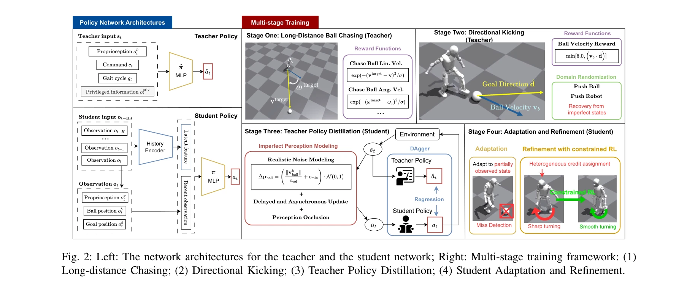

저자: Zifan Xu, Myoungkyu Seo, Dongmyeong Lee, Hao Fu, Jiaheng Hu, Jiaxun Cui, Yuqian Jiang, Zhihan Wang, Anastasiia Brund, Joydeep Biswas, Peter Stone | 날짜: 2025-12-10 | DOI: 10.48550/arXiv.2512.06571

Fig. 2: Left: The network architectures for the teacher and the student network; Right: Multi-stage training framework:
이 논문은 reinforcement learning 기반의 4단계 학습 프레임워크를 통해 인간형 로봇이 노이즈가 있는 센서 입력에서도 강건한 볼 킹킹 기술을 습득하도록 하는 시스템을 제시한다.
Fig. 2: Left: The network architectures for the teacher and the student network; Right: Multi-stage training framework:
Fig. 2: Left: The network architectures for the teacher and the student network; Right: Multi-stage training framework:
총평: 이 논문은 noisy perception 환경에서 인간형 로봇의 복잡한 동적 기술을 학습하는 현실적이고 체계적인 프레임워크를 제시하며, 4단계 curriculum, 현실적 지각 모델링, constrained RL 적응의 조합으로 sim-to-real gap을 효과적으로 감소시켰다. 실제 로봇 실험 결과와 포괄적 ablation 연구는 제안 방법의 타당성을 잘 입증하고 있으나, 단일 로봇 플랫폼 평가와 66.7% 성공률이 실무 적용성을 위해서는 추가 개선이 필요하다.